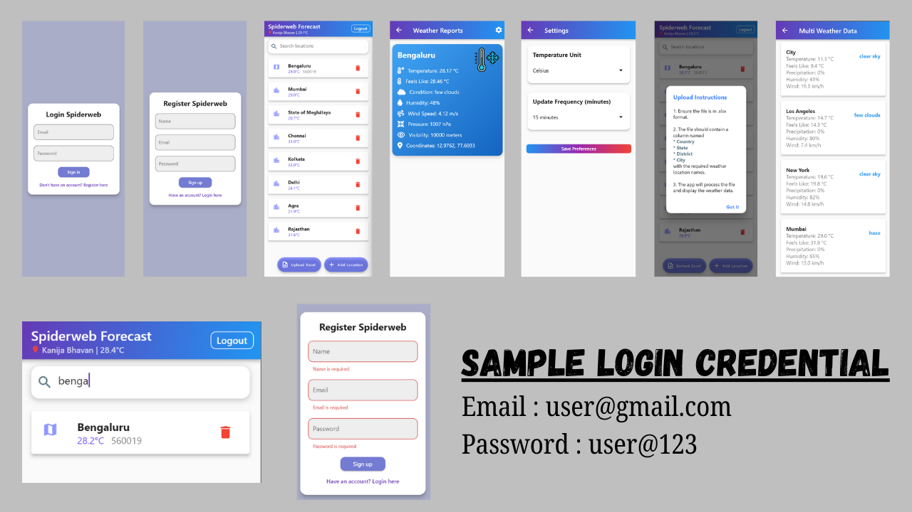

The Spiderweb Forecast App is designed to provide accurate and real-time weather forecasts for multiple locations. With a sleek and intuitive user interface, the app allows users to register, log in, and manage their preferred locations for weather updates. Its functionality ensures ease of use and convenience, particularly for those needing frequent weather updates for specific areas.
Key Features:
- User Registration and Login: Secure account creation and access.
- Location Management: Add and remove multiple locations for weather tracking.
- Weather Reports: Detailed weather information, including temperature, humidity, wind speed, visibility, and more.
- Settings Customization: Option to set temperature units and update frequency.
- File Upload for Locations: Upload a structured Excel file to automate the addition of weather locations.
- Weather Condition Icons: Visually represented weather conditions, such as clear skies, haze, and few clouds.
- Responsive Design: Optimized for various devices, ensuring seamless user experiences across platforms.
Technologies Used:
- Figma: For wireframing and UI/UX design.
- Flutter: Cross-platform mobile development.
- Firebase: Backend integration for authentication and weather data storage.
- OpenWeatherMap API: To fetch real-time weather data.
- Git: For version control and project collaboration.